File: 000990.gt.txt (if the image is defective, simply delete all Arabic text and the line will be excluded)
وحسن النية.
File: 000991.gt.txt (if the image is defective, simply delete all Arabic text and the line will be excluded)
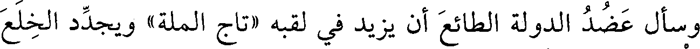
وسأل عضد الدولة الطائع أن يزيد في لقبه «تاج الملة» ويجدد الخلع
File: 000992.gt.txt (if the image is defective, simply delete all Arabic text and the line will be excluded)
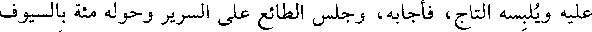
عليه ويلبسه التاج، فأجابه، وجلس الطائع على السرير وحوله مئة بالسيوف
File: 000993.gt.txt (if the image is defective, simply delete all Arabic text and the line will be excluded)
والزينة، وبين يديه مصحف عثمان، وعلى كتفه البردة، وبيده القضيب،
File: 000994.gt.txt (if the image is defective, simply delete all Arabic text and the line will be excluded)
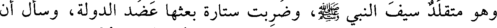
وهو متقلد سيف النبي صعلم، وضربت ستارة بعثها عضد الدولة، وسأل أن
File: 000995.gt.txt (if the image is defective, simply delete all Arabic text and the line will be excluded)
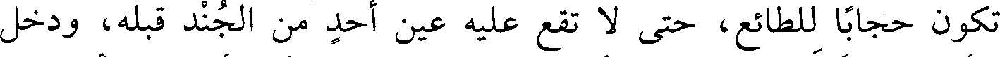
تكون حجابا للطائع، حتى لا تقع عليه عين أحد من الجند قبله، ودخل
File: 000996.gt.txt (if the image is defective, simply delete all Arabic text and the line will be excluded)
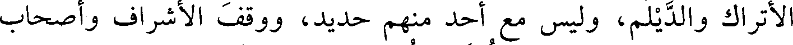
الأتراك والديلم، وليس مع أحد منهم حديد، ووقف الأشراف وأصحاب
File: 000997.gt.txt (if the image is defective, simply delete all Arabic text and the line will be excluded)
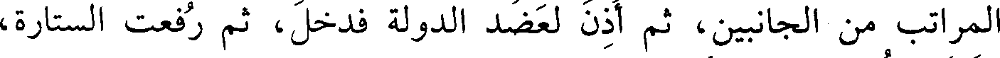
المراتب من الجانبين، ثم أذن لعضد الدولة فدخل، ثم رفعت الستارة،
File: 000998.gt.txt (if the image is defective, simply delete all Arabic text and the line will be excluded)
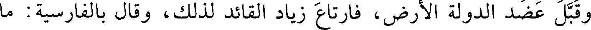
وقبل عضد الدولة الأرض، فارتاع زياد القائد لذلك، وقال بالفارسية: ما
File: 000999.gt.txt (if the image is defective, simply delete all Arabic text and the line will be excluded)
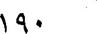
190
File: 001000.gt.txt (if the image is defective, simply delete all Arabic text and the line will be excluded)
78 - علي بن عبدالله بن الفضل البغدادي، أبوالحسين.
File: 001001.gt.txt (if the image is defective, simply delete all Arabic text and the line will be excluded)
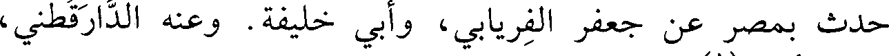
حدث بمصر عن جعفر الفريابي، وأبي خليفة. وعنه الدارقطني،
File: 001002.gt.txt (if the image is defective, simply delete all Arabic text and the line will be excluded)
وعبدالغني الأزدي(1) .
File: 001003.gt.txt (if the image is defective, simply delete all Arabic text and the line will be excluded)
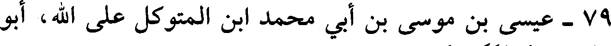
79 - عيسى بن موسى بن أبي محمد ابن المتوكل على الله، أبو
File: 001004.gt.txt (if the image is defective, simply delete all Arabic text and the line will be excluded)
الفضل الهاشمي العباسي.
File: 001005.gt.txt (if the image is defective, simply delete all Arabic text and the line will be excluded)
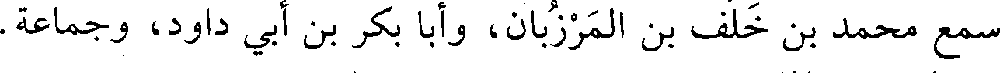
سمع محمد بن خلف بن المرزبان، وأبا بكر بن أبي داود، وجماعة.
File: 001006.gt.txt (if the image is defective, simply delete all Arabic text and the line will be excluded)
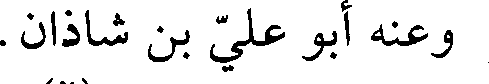
وعنه أبو علي بن شاذان.
File: 001007.gt.txt (if the image is defective, simply delete all Arabic text and the line will be excluded)
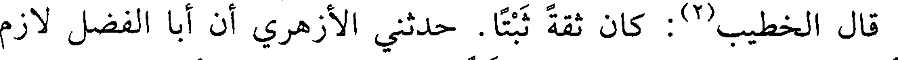
قال الخطيب(2) : كان ثقة ثبتا. حدثني الأزهري أن أبا الفضل لازم
File: 001008.gt.txt (if the image is defective, simply delete all Arabic text and the line will be excluded)
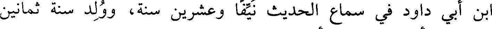
ابن أبي داود في سماع الحديث نيفا وعشرين سنة، وولد سنة ثمانين
File: 001009.gt.txt (if the image is defective, simply delete all Arabic text and the line will be excluded)
ومئتين، وأول سماعه من أبي بكر سنة تسعين.
File: 001010.gt.txt (if the image is defective, simply delete all Arabic text and the line will be excluded)
80 - غالب بن عبدالله بن موسى بن فليح، أبو بكر البزاز.
File: 001011.gt.txt (if the image is defective, simply delete all Arabic text and the line will be excluded)
مصري، توفي في جمادى الأولى.
File: 001012.gt.txt (if the image is defective, simply delete all Arabic text and the line will be excluded)
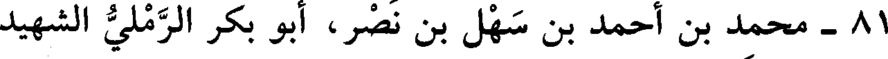
81 - محمد بن أحمد بن سهل بن نصر، أبو بكر الرملي الشهيد
File: 001013.gt.txt (if the image is defective, simply delete all Arabic text and the line will be excluded)
المعروف بابن النابلسي.
File: 001014.gt.txt (if the image is defective, simply delete all Arabic text and the line will be excluded)
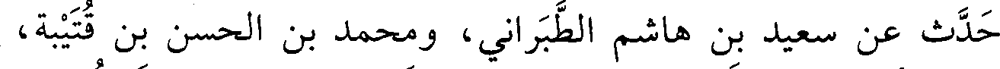
حدث عن سعيد بن هاشم الطبراني، ومحمد بن الحسن بن قتيبة،
File: 001015.gt.txt (if the image is defective, simply delete all Arabic text and the line will be excluded)
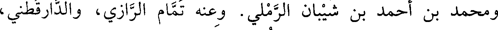
ومحمد بن أحمد بن شيبان الرملي. وعنه تمام الرازي، والدارقطني،
File: 001016.gt.txt (if the image is defective, simply delete all Arabic text and the line will be excluded)
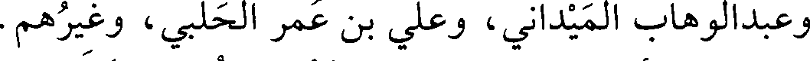
وعبدالوهاب الميداني، وعلي بن عمر الحلبي، وغيرهم.
File: 001017.gt.txt (if the image is defective, simply delete all Arabic text and the line will be excluded)
قال أبو ذر الهروي : سجنه بنو عبيد وصلبوه على السنة. سمعت
File: 001018.gt.txt (if the image is defective, simply delete all Arabic text and the line will be excluded)
الدارقطني يذكره ويبكي ويقول : كان يقول وهو يسلخ: ( كان ذلك في الكتاب
File: 001019.gt.txt (if the image is defective, simply delete all Arabic text and the line will be excluded)
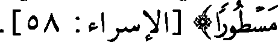
مسطورا ) [الإسراء : 58] .
To Save: `Ctrl+s`, make sure to choose `Webpage, complete`!